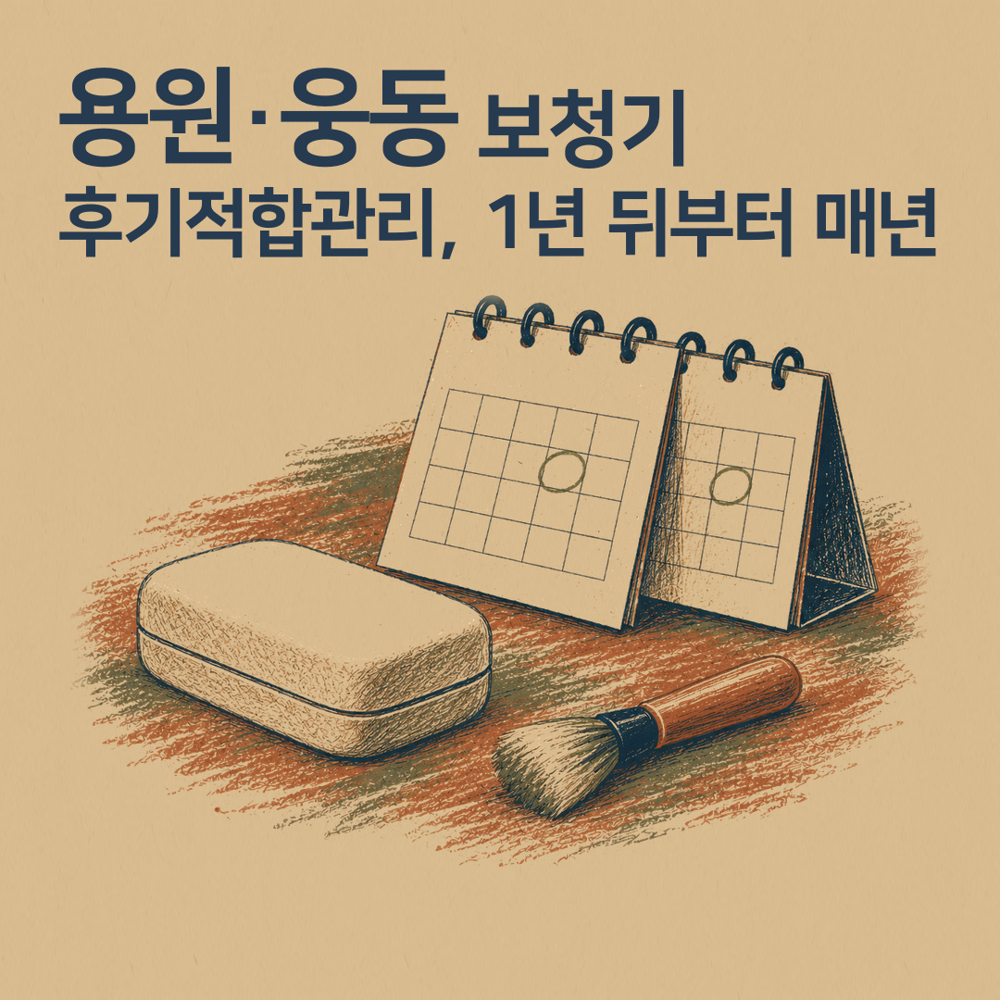
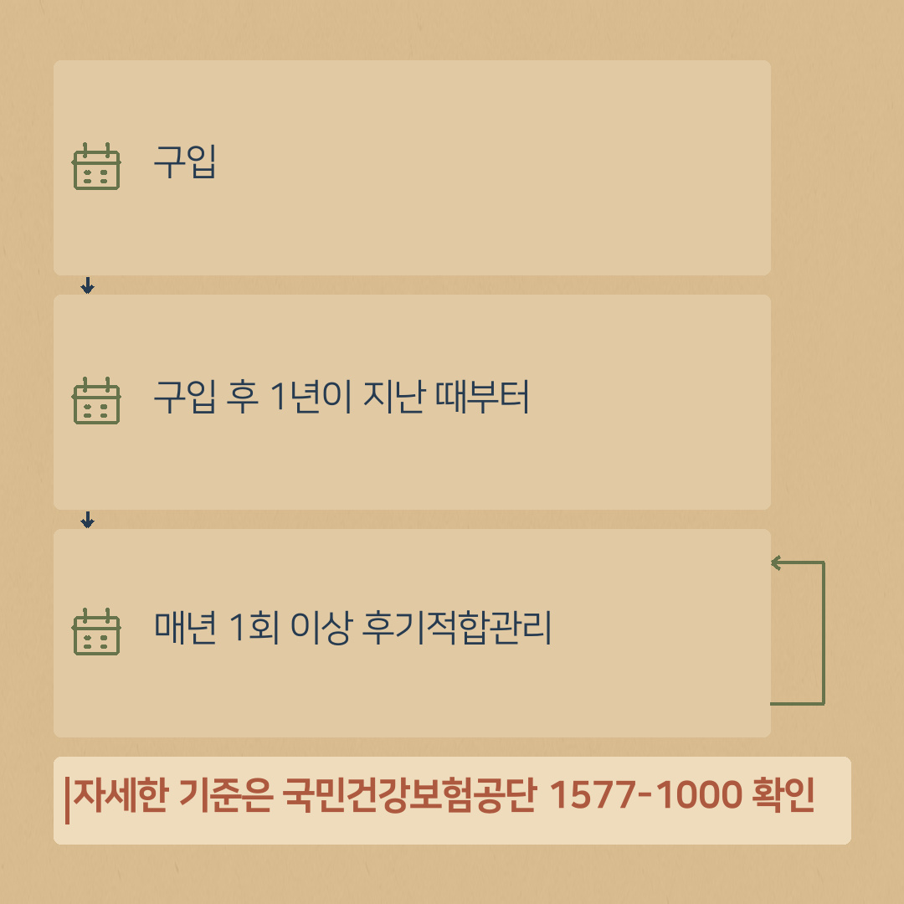
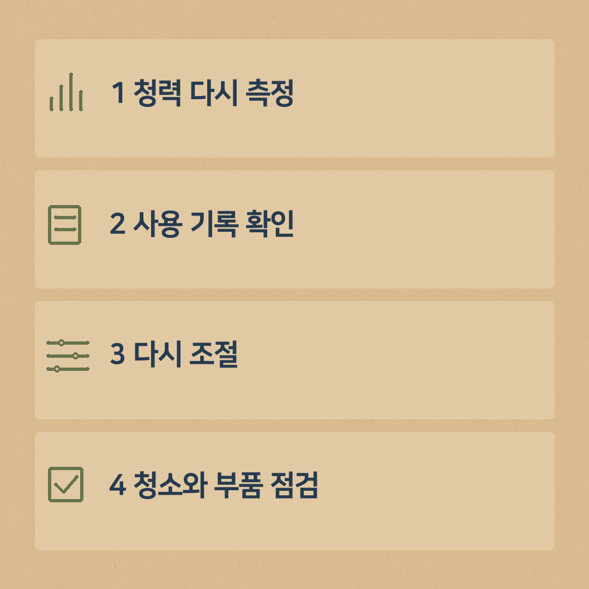

보청기 후기적합관리, 구입 1년 뒤부터 매년 받는 이유와 방법
- 공단 기준: 보청기 구입 후 1년이 지난 때부터 매년 1회 이상 후기적합관리를 받으면 급여비 지급이 가능합니다.
- 대상: 건강보험 보청기 급여로 구입하신 분(해당 여부·금액·횟수는 공단 1577-1000 확인)
- 관리 때 하는 일: 청력 다시 측정, 사용 기록(데이터로그) 확인, 다시 조절, 청소와 부품 점검
- 청구 서류: 적합관리 급여 청구서, 세금계산서 또는 카드 전표, 청각 측정 결과지 및 데이터로그기록(피팅리포트)

건강보험 지원으로 보청기를 구입하신 분들 중에 「후기적합관리」라는 말을 처음 들어 보셨다는 분이 많습니다. 이름이 어렵지만, 쉽게 말하면 "구입한 보청기를 매년 다시 내 귀에 맞추는 관리"입니다.
후기적합관리가 무엇인지, 언제 받는지, 무엇을 준비하면 되는지 정리했습니다. 용원·웅동처럼 센터와 조금 떨어진 곳에 사시는 분들도 날짜를 미리 잡아 두시면 편합니다.
후기적합관리, 공단 기준은 이렇습니다
국민건강보험공단 「보청기 지급기준」에는 이렇게 적혀 있습니다.
"보청기 구입 후 1년이 지난 때부터 매년 1회 이상 후기적합관리를 받은 경우 급여비 지급 가능합니다."
- 언제부터: 구입하고 1년이 지난 때부터
- 얼마나 자주: 매년 1회 이상
- 대상: 건강보험 보청기 급여로 구입하신 분 (해당 여부는 공단에 확인)
지급되는 금액과 횟수 등 자세한 기준은 국민건강보험공단(1577-1000)에 확인해 주세요.

왜 매년 다시 맞춰야 할까요
보청기는 처음 맞춘 날의 내 청력과 생활에 맞춰 조절된 상태입니다. 그런데 시간이 지나면 몇 가지가 달라집니다.
- 청력이 조금씩 달라질 수 있습니다.
- 생활이 바뀝니다. 일을 그만두거나, 모임이 늘거나, 손주와 통화가 많아지는 것처럼요.
- 보청기 부품도 닳습니다. 필터, 돔, 관 같은 부분은 쓰다 보면 막히거나 굳습니다.
그래서 1년에 한 번은 청력을 다시 확인하고, 그동안 보청기를 어떻게 쓰셨는지 보고, 지금 생활에 맞게 다시 조절하는 시간이 필요합니다.
후기적합관리 때 하는 일 (귀인보청기 기준)
1. 청력 다시 측정
지난번과 비교해 청력이 달라졌는지 확인합니다. 지난번보다 청력이 많이 떨어졌거나 한쪽만 나빠졌다면, 다시 조절하기 전에 이비인후과 진료를 먼저 권해 드립니다.
2. 사용 기록 확인
보청기에는 하루에 몇 시간 썼는지, 어떤 환경에서 주로 썼는지 기록(데이터로그)이 남습니다. 이 기록을 함께 봅니다.
3. 다시 조절
불편했던 상황을 여쭤보고, 측정 결과와 사용 기록에 맞춰 소리를 다시 맞춥니다.
4. 청소와 부품 점검
필터, 돔, 관 등 닳는 부분을 점검하고 청소합니다.
공단 청구 서류에도 「청각 측정 결과지 및 데이터로그기록(피팅리포트)」이 들어가 있습니다. 그래서 측정과 기록 확인이 함께 진행됩니다.

후기적합관리 청구 서류 (공단 안내)
- 보청기 적합관리 급여 청구서 1부
- 세금계산서 또는 신용카드·현금카드 전표 1부
- 청각 측정 결과지 및 데이터로그기록(피팅리포트)
서식은 국민건강보험공단 홈페이지 「보조기기별 지급기준 > 보청기」에서 내려받을 수 있습니다. 매장에서 관리를 받으실 때 서류도 같이 확인해 드립니다.
날짜 놓치지 않는 방법
- 보청기를 구입한 날을 휴대폰 달력에 '매년 반복'으로 저장해 두세요.
- 구입일로부터 1년이 지난 날 이후로 미리 전화 예약을 해 두시면 편합니다.
- 부모님이 쓰시는 경우, 자녀분 달력에도 함께 적어 두시면 잊지 않으십니다.
- 구입일: ____년 __월 __일
- 첫 후기적합관리(구입 1년이 지난 때부터): ____년 __월
- 올해 관리 받은 날: ____년 __월 __일
오실 때 가져오실 것
- 쓰고 계신 보청기 (양쪽 모두)
- 충전기 또는 건전지
- 1년 동안 불편했던 상황 메모 (예: "식당에서 말소리가 잘 안 들림", "전화할 때 울림")
용원·웅동에서 오시는 분은 진해센터(진해대로 999 하이존빌딩, 하이존 상가 지하주차장) 또는 부산 명지서비스센터 중 편한 곳으로 예약하고 오시면 됩니다.
제도는 바뀔 수 있습니다. 신청 전에 국민건강보험공단 홈페이지나 1577-1000에서 한 번 더 확인해 주세요.
상담 예약
전화 010-6599-0109 또는 0507-1426-0116 (두 센터 공통)
진해센터 경남 창원시 진해구 진해대로 999, 하이존빌딩 1층 108호(자은동) · 하이존 상가 지하주차장
명지서비스센터 부산 강서구 명지국제6로 99, A동 1070호 · 대방디엠시티 상가주차장
운영시간: 평일 08:30–18:30, 토요일 08:30–13:00, 일요일 휴무 · 예약 후 방문해 주세요. 오시는 길 보기
네이버 블로그에서도 보기: 귀인보청기 블로그 · English version